Programming in Python with the Initio Robot: Part 1 |
|
Programming in Python with the Initio Robot: Part 1
Chapter 1: Getting Started
AIM: After following this chapter you should be able to connect a keyboard, mouse and monitor to your Initio robot and switch it on ready for use.
Your Initio robot has several USB ports, an HDMI port and a micro USB port.
HDMI and Micro USB port locations

USB Ports
You should connect your monitor to the HDMI port and your keyboard and mouse to two of the USB ports.
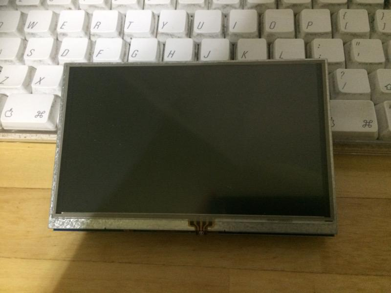 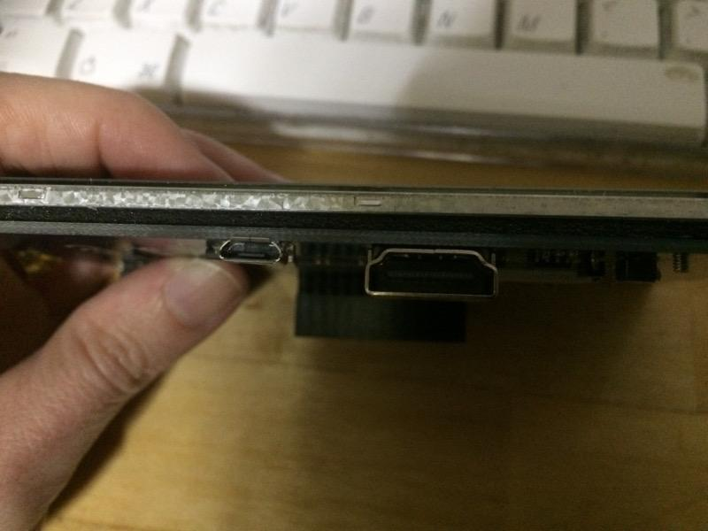
The Elecrow 5 inch monitor: USB port (for power) and the HDMI Port
If you are using the Elecrow 5 inch monitor then it can be powered from the Initio. Connect one of the USB ports on the Initio to the Micro USB port on the monitor.
If you also have an external power supply it can be connected to the Micro USB port on the Initio.
Switch your robot on using the On/Off Switch.

The On/Off Switch
Your final setup should look something like this.
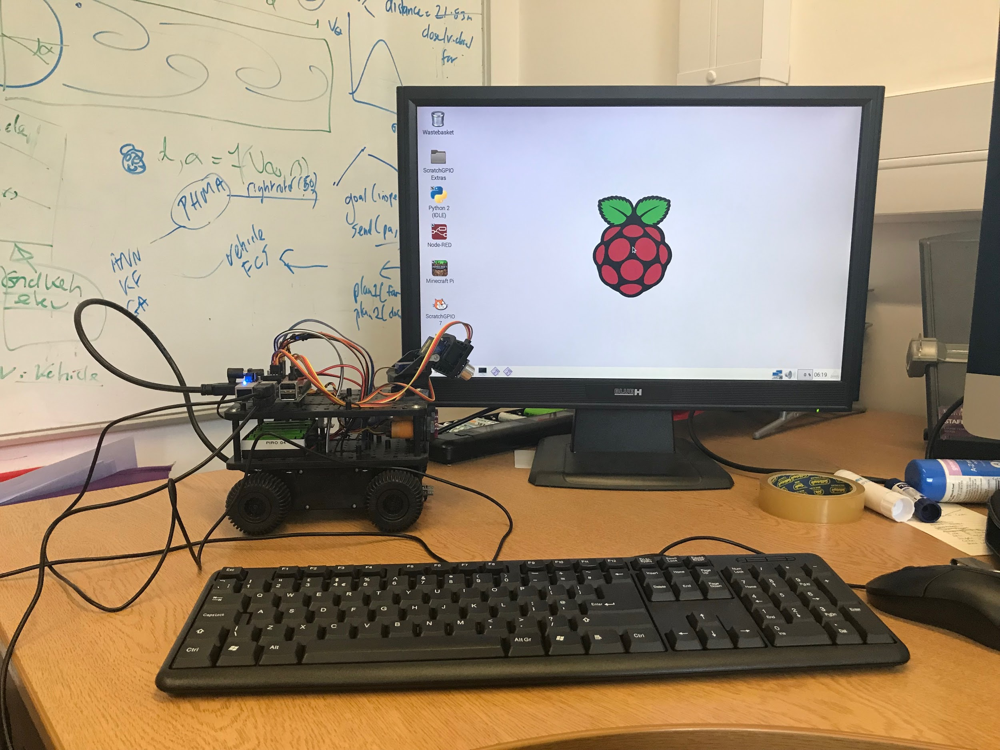
or (if you are using the Elecrow 5 inch monitor):
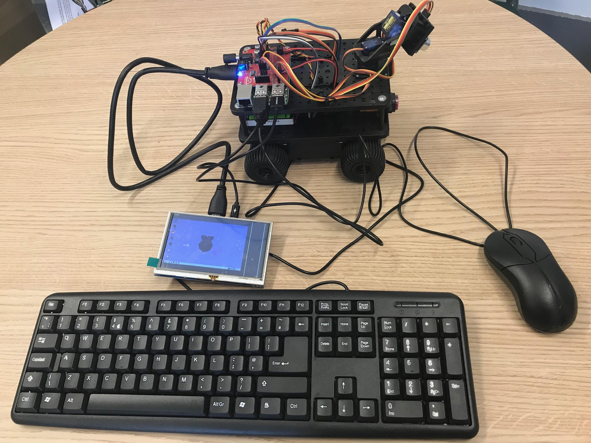
Chapter 2: Command Lines
AIM: After completing this chapter you should be able to use the Linux Command line to start up the Python interpreter and the Python command line to use simple print commands. You should also be able to stop the Python interpreter.
You Need: To complete this chapter you need to have an Initio that is connected to a keyboard, mouse and monitor (see chapter 1).
The Initio robot is controlled using a Raspberry Pi computer that runs the Linux operating system. You will be doing most of your work at the Linux command line. To do this you need to open the Terminal application from the menu bar.
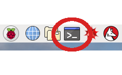
Raspberry Pi Menu bar, with the Terminal application circled
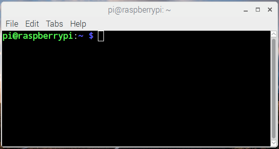
A Terminal window
If you are using an Elecrow 5 inch monitor then your terminal window will be slightly larger than the monitor. Resize the window using the mouse so that it fits into the screen space available.
For simple programming tasks we can use the Python Command Line Interpreter. We are going to use this from within an integrated development environment called IDLE. To start IDLE type idle3 at the Linux Command Line.
pi@raspberrypi:~ $ idle3
What happens when you do this?
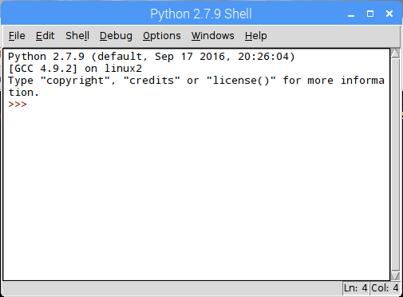

3
signs (>>>)
are called the prompt
The Python Command Line Interpreter in IDLE
You should now be in the Python Interpreter which should look like the above. You DO NOT need to type the “prompt” (>>>) before any python commands.
Step 1: Type
print(“Hello World”)
Then press Return
What happens?
Step 2: Type the following commands followed by Return
MOVE
MOVE
initio.init()
initio.forward(10)
initio.stop()
What happens?
You can use ctrl-p (pressing control and p at the same time) to scroll back through previous commands.
Step 3: Try replaying some commands using ctrl-p
You will learn more about controlling the Initio from the Python Command Line in worksheet WS3.
IMPORTANT: You can also start IDLE from the Raspberry Pi menu. However, if you do this it will not be able to control the Initio properly.
If you have finished working with your robot type:
initio.cleanup()
Otherwise carry on to chapter 3.
Chapter 3: Python Statements and Initio Commands
AIM: After completing this chapter you should be able to control your Initio robot using simple statements issued at the Python Command Line and be able to explain what a statement in a programming language is.
You Need: To complete this chapter you need to have an Initio that is connected to a keyboard, mouse and monitor (chapter 1) and to understand how to start and stop IDLE from the Linux Command Line (chapter 2).
Set up your robot and start IDLE.
Remember: You can scroll back through commands in IDLE by typing ctrl-p
In order to control your robot you need to initialise it properly. To initialise your robot type the following at the Python Command Line
>> import robohat as initio
>> initio.init()
Now you can use simple commands to control your robot. Try typing the following:
>> initio.forward(20)
>> initio.stop()
Question 1: What happens?
Each of these commands initio.init(), initio.forward(20), initio.stop() is a python statement. Statements are the basic commands that are used to build up programs. You have several commands available to you for operating the Initio robot.
These commands are described in the box on the next page. Not that parts in italics are inputs to the commands which you have to select. So for initio.spinLeft(speed) you have to replace speed with a number between 0 and 100.
initio.stop()
initio.forward(speed) where speed is a number and 0 <= speed <= 100
initio.reverse(speed) where speed is a number and 0 <= speed <= 100
initio.spinLeft(speed) where speed is a number and 0 <= speed <= 100
initio.spinRight(speed) where speed is a number and 0 <= speed <= 100
initio.turnForward(leftSpeed, rightSpeed) where leftSpeed and rightSpeed are numbers and 0 <= leftSpeed, rightSpeed <= 100
initio.turnReverse(leftSpeed, rightSpeed) where leftSpeed and rightSpeed are numbers and 0 <= leftSpeed, rightSpeed <= 100
initio.setServo(servo, angle): where servo is either 0 or 1 and -90 <= angle <= 90
Try typing the following:
>> initio.setServo(0, 20)
Question 2: What happens?
initio.setServo controls two servo motors that move the sensor at the front of the robot (you will learn about the sensor in worksheet 4). It takes two inputs: the number for the servo (0 is for tilt which moves the sensor up and down. 1 is for pan which moves the sensor from side to side), followed by the angle in degrees you want to move it to (where 0 means it is pointing forwards dead centre). So the command you just typed gets the servo to pan 45 degrees from the centre point.
Try typing the following:
>> initio.setServo(1, -45)
Question 3: What happens?
Question 4: Try four commands from the table. What do they do?
Command Result
Chapter 4: Sensors
AIM: After completing this chapter you should be able to describe the sensors on the Initio robot and use Python to get information from them.
You Need: To complete this chapter you need to have an Initio that is connected to a keyboard, mouse and monitor (chapter 1) and to understand how to start IDLE from the Linux Command Line (chapter 2) and how to control the pan/tilt servos (chapter 3).
The Initio robot has two different kinds of sensors:
Ultrasonic: It has an ultrasonic sensor which uses sound and echoes to measure distances.
Infrared: It has several infrared sensors that measure how much infrared light is reflected. These can be used both to measure distances (like with the ultrasonic sensor) and to measure colour – for instance a black surface reflects less infra-red light than a white surface.
You can use Python to get values from the sensors.
The Ultrasonic Sensor

The Ultrasonic Sensor
Locate the ultrasonic sensor on your Initio robot.
There is one command you can use to get information from the ultrasonic sensor. This is:
>>> initio.getDistance()
initio.getDistance(); returns the distance in cm to the nearest reflecting object. A value of zero means it does not detect an object
Type initio.getDistance()
Question 1: What value do you get?
Question 2: Try pointing the sensor at the ceiling or a far wall and getting the distance.
What value do you get?
Question 3: Now try putting an object close to the sensor.
What value do you get?
The ultrasonic sensor is the sensor you can move using the initio.setServo command discussed in WS3.
Place an object in front of the robot but a little to one side of the ultrasonic sensor. Use initio.setServo to move the sensor and see what difference it makes to the result from initio.getDistance()
Question 4: What command(s) did you type to move the sensor in order to detect the object?
Infrared Sensors
The Initio’s infrared sensors are organised into two groups: sensors for detecting obstacles and sensors for detecting lines.
There are two sensors for detecting obstacles:
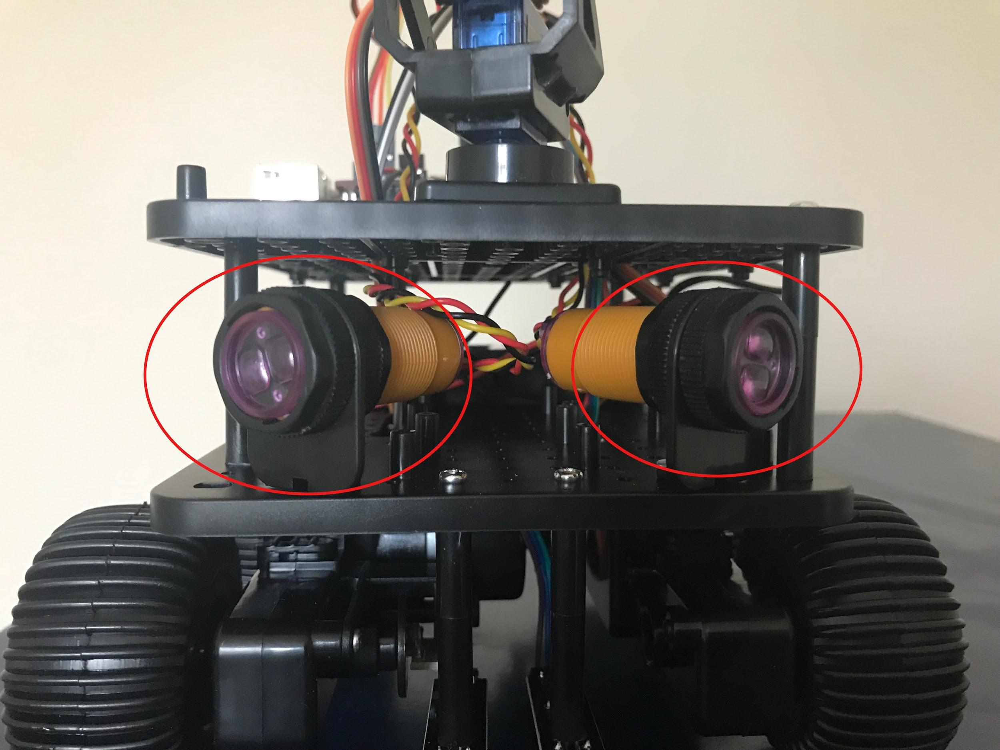
The Obstacle Sensors
There are three commands for getting information from the obstacle sensors:
>>> initio.irLeft()
returns True if the Left IR Obstacle sensor detects an obstacle and False otherwise
>>> initio.irRight()
returns True if the Right IR Obstacle sensor detects an obstacle and False otherwise
>>> initio.irAll()
returns True if either of the Obstacle sensors detect an obstacle and False otherwise
Question 5: Use a ruler and the obstacle sensor commands to work out how far away something needs to be to count as an obstacle.
Answer:
Question 6: Is this answer the same both obstacle sensors? YES/NO
The Initio’s other infrared sensors are used to detect how dark the colour of the surface the robot stands on is. These are referred to as “line sensors” since their primary use is for detecting black lines on white surfaces.
There are two line sensors and you will need to turn your Initio over in order to see them.
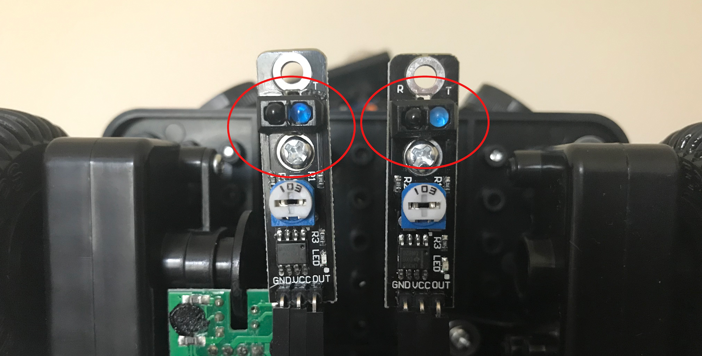
The Line Sensors
There are two command for getting information from the line sensors:
>>> initio.irLeftLine()
returns state of Left IR Line sensor
>>> initio.irRightLine()
returns state of Right IR Line sensor
Question 7: Get
a piece of white paper with a black line drawn on it. What do the
python commands return if the Pi2Go is over the black line?
Question 8: What do they return if the Pi2Go is over the white parts of the paper

Remember: When you have finished working with the robot, type initio.cleanup()at the command line, quit IDLE, then select Shutdown from the Raspberry Pi menu item. Once the robot has shut down, switch it off.
Chapter 5: Exercises with Sensors
Aim: This chapter 5 provides additional activities for investigating the Initio robot sensors. It assumes familiarity with the material in chapters 1-4.
Exercise 1: Because the ultrasonic sensor uses echoes to detect distances it can be affected by the angle at which its sound wave hits an object.
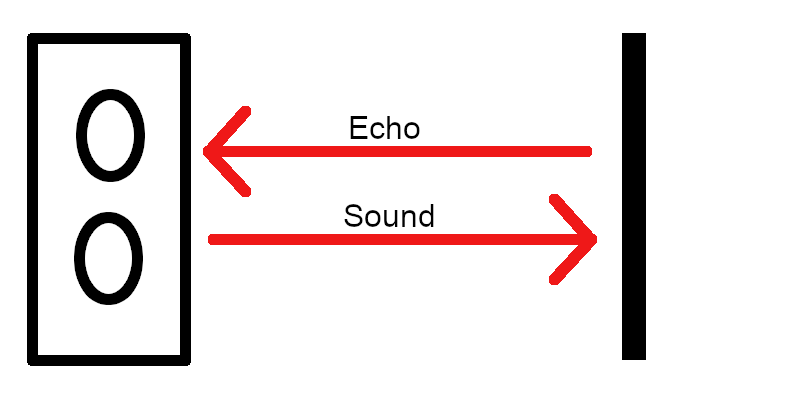
Ultrasonic Sensor with Obstacle Directly in Front of It
When the sound from the ultrasonic sensor hits an obstacle squarely then the echo bounces straight back to the sensor.
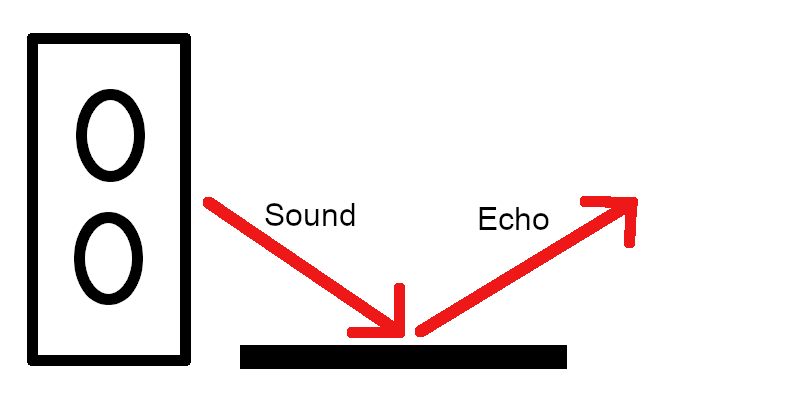
Ultrasonic Sensor with an Obstacle at an Angle to it.
When the sound from the ultrasonic sensor hits an obstacle at an angle then the echo can bounce away from it.
Experiment Aim: The aim of this experiment is to discover the angle at which your Initio robot’s ultrasonic sensor can not detect an object.
Method: To perform the experiment place the robot directly facing a flat surface such as a wall. The pan/tilt servos should be set so the ultrasonic sensor is panned to 0 degrees (that is it is facing forward).
Take a distance reading from the ultrasonic sensor for each angle from 0 to 90 and check the accuracy of the distance. You may well need a tape measure as the angle increases.
Results: Record your results and state at what angle the sensor could no longer detect the obstacle.
Exercise 2: The same effect can be observed with the infrared sensors but will be harder to detect. Firstly, you can not rotate the sensors you will need to rotate either the robot or the obstacle. Secondly the sensors just return True or False depending upon how close the object is so you will have to make sure your flat surface is always close enough to the robot that it should return True.
Devise and run an experiment to find out at what angle the infrared sensors stop being accurate.
Chapter 6: Programs in Files
AIM: After completing this chapter you should be able to write a Python program using IDLE’s program editor and execute it in IDLE.
You Need: To complete this chapter you need to have an Initio that is connected to a keyboard, mouse and monitor (chapter 1) and to understand how to start and stop IDLE from the Linux Command Line (chapter 2).
You can control your Initio by writing commands at the Python command line. However, for longer programs, or programs you wish to run several times this can become tedious. To get around this you can write a Python program in a file.
We are going to consider the following Python program
import robohat as initio
initio.init()
initio.forward(10)
initio.setServo(0, -45)
initio.stop()
To write this program we are going to use the editor that comes with IDLE.
Select File > New File in IDLE.
Type the program above into this file (make sure you spell everything correctly). You can save the file using the File menu. We suggest you create a folder for your Python programs.
You can execute your program by selecting Run > Run Module
Question 1: Try this now. What happens?
If you are lucky this will have run smoothly. If not, you will have received an error message and will need to check your program for spelling errors.
Exercise 1: Modify your program so that it pans the ultrasonic sensor to 45 degrees first and then moves it back to 0 after the Initio has stopped.
Chapter 7: The Time Module
AIM: After completing this chapter you should be able to use commands from Python’s Time module to delay execution of commands on the Initio. You should also be able to explain how to import a module into Python.
You Need: To complete this chapter you need to have an Initio that is connected to a keyboard, mouse and monitor (chapter 1), to understand how to start and stop IDLE from the Linux Command Line (chapter 2), and to be able to use files to store Programs (chapter 6). You also need to know the commands to operate the Initio motors (chapter 3).
When we program, we don’t always want to write everything the program should do from scratch. When someone has already solved a problem, for instance, delaying the execution of a command, then we would like to be able to use their solution. This is done by importing modules (in some languages called libraries) of pre-programmed commands into our program.
You are already using a module in your programs. The statement import robohat as initio; at the start of all your programs is importing the robohat module which contains the commands for operating your Initio robot and renaming this module initio.
In this chapter we will use the time module to delay the execution of some of those commands.
Create a file containing the following program and execute it:
import robohat as initio, time
initio.init()
initio.forward(10)
initio.sleep(10)
initio.stop()
Question 1: What happens?
The Sleep Command: The command time.sleep(seconds); makes the program pause for the number of seconds before executing the next command.
Exercise 1: Adapt the program to make the robot move forward for 20 seconds before stopping.
Question 2: What did you change?
Exercise 2: Write a program to make the robot wait for 30 seconds (giving you time to unplug the monitor and keyboard), move forward for 10 seconds, turn for 10 seconds and then stop.
Write your program below:
Remember: When you have finished working with the robot, type initio.cleanup()at the command line, quit IDLE, then select Shutdown from the Raspberry Pi menu item. Once the robot has shut down, switch it off.
Chapter 8: Simple Programs
AIM: This chapter provides additional simple programs for you to write for your Initio. It assumes familiarity with chapters 1-7.
Exercise 1: Write a program that will spin the robot for 2 seconds, then take a distance sensor reading and print it to the screen and stop. To print the value of the sensor use: print(initio.getDistance())
Exercise 2: Write a program which will make the robot tilt its ultrasonic sensor upwards for 5 seconds, then down for 5 seconds and then return it to the centre.
Exercise 3: Write a program so that your robot drives around in a circle taking readings from its two infrared distance sensors roughly every quarter circle. Some experimentation will be needed to work out how long a quarter turn takes for your robot.
Exercise 4: Write a program where the robot moves forward changing speed every 10 seconds for a total of 30 seconds.
Exercise 5: Write a program so that the robot nods its head (tilts its ultrasonic sensor up and then down like in exercise 2). Then it moves forward for 10 seconds and nods its head again. Then it spins on the spot for 10 seconds then nods its head again. Then it reverses for 10 seconds and nods its head a final time.
Exercise 6: Create a short obstacle course for your robot. For instance, a gap between two books it must move through, then a turn to move between two rows of books.
Write a program that will move your robot from the start position to the end position in your obstacle course. To do this you will need to experiment to find out how long it needs to move forward in each stage and how long it needs to turn for in each stage.
Chapter 9: If
AIM: After completing this chapter you should be able to use if statements in Python to create more complex programs.
You Need: To complete this chapter you need to have an Initio that is connected to a keyboard, mouse and monitor (chapter 1), to understand how to start and stop IDLE from the Linux Command Line (chapter 2), and to be able to use files to store Programs (chapter 6). You also need to know the commands to operate the Initio motors and sensors (chapters 3 & 4), and the time.sleep command (chapter 7).
We want programs to be more flexible than simply following a series of instructions. We want them to do different things in different circumstances. For instance, we might want our Initio rover to move backwards if there is an obstacle in front of it and forwards otherwise.
The following program will do this:
import robohat as initio, time
initio.init()
if (initio.getDistance() < 50):
print(initio.getDistance())
initio.reverse(10)
else:
initio.forward(10)
time.sleep(10)
initio.stop()
There are a few things to note here. Python uses spaces to tell when something is part of a block of code inside an if statement. This feature is unique to Python and is not used in many other programming languages. So in the program above Python knows that it should print out the value from the ultrasonic sensor and then execute initio.reverse(10) if there is an obstacle closer than 50 cm because both statements follow after the if and are indented - there is a space in front of the statement.
Similarly it knows that initio.reverse(10) should be executed if there is no obstacle because it follows after the else and is indented.
Note also that we have colons after the if and the else.
Question 1: Create a file containing this program and execute it. What happens?
Exercise 1: Describe how you would test your program to make sure it was working correctly both when there was an obstacle and when there wasn’t.
Question 2: Perform your tests. Is your program working correctly? YES/NO
Exercise 2: Write a program using an if statement that will turn left if there is an obstacle on the right and turn right if there is an obstacle on the left.
Hint: To do this you may want to use elif which means (else if) - e.g.
elif (initio.irLeft()):
instead of else:
Question 3: How many cases do you need to consider to test your program?
Question 4: Does the description of the exercise tell you what the program should do in all cases? YES/NO
Exercise 3: Modify the program so that the robot reverses for 10 seconds if there is an obstacle and then turns for 10 seconds. If there isn’t an obstacle the robot moves forward.
Write your program below
Remember: When you have finished working with the robot, type initio.cleanup()at the command line, quit IDLE, then select Shutdown from the Raspberry Pi menu item. Once the robot has shut down, switch it off.
.
Chapter 10: While Loops
AIM: After completing this chapter you should be able to use while loops in Python programs. You should also be able to construct conditions using the Python logical operator not
You Need: To complete this chapter you need to have an Initio that is connected to a keyboard, mouse and monitor (chapter 1), to understand how to start and stop IDLE from the Linux Command Line (chapter 2), and to be able to use files to store Programs (chapter 6). You also need to know the commands to operate the Initio motors and sensors (chapters 3 & 4).
A while loop allows a Python program to continue executing some statement while something remains true. For instance, we might want our Initio to keep reversing while there is an obstacle.
import robohat as initio
initio.init()
initio.reverse(10)
while (initio.irCentre()):
print(“Reversing”)
initio.stop()
Notice that we start reversing before we execute the while loop. This is because once you start your Initio moving, it carries on doing that until it is told to do something else. So, we are simply using the while loop prevent the program moving on to the stop command.
Question 1: Create a file containing this program and execute it. What happens?
Question 2: What sort of tests would you need to perform to check the program was working properly in all cases?
Chapter 11: Using Logic in Conditions
AIM: After completing this chapter you should be able to use logic to construct more complex conditions for If statements.
You Need: To complete this chapter you need to have an Initio that is connected to a keyboard, mouse and monitor (chapter 1), to understand how to start and stop IDLE from the Linux Command Line (chapter 2), and to be able to use files to store Programs (chapter 6). You also need to know the commands to operate the Initio motors and sensors (chapters 3 & 4) and how to use while statements in Python (chapter 10).
Problem: You will have noticed that it is very cumbersome to operate your Initio while it is connected to the keyboard, mouse and monitor. Ideally you would have time after your program started running to disconnect everything.
Consider the program below
import robohat as initio, time
initio.init()
while (initio.getDistance() > 5):
print(“Waiting”)
initio.setServo(0, 20)
time.sleep(1)
initio.setServo(0, 0)
Question 1: What do you expect this program to do?
Question 2: Execute the program. Did it do what you expected? YES/NO.
Exercise 1: Modify the program by adding a second while loop so that the Initio ultrasonic sensor continues to be tilted upwards until the object closer than 5cm moves away.
Logic in conditions: You can use logic to make the conditions of your Python loops and if statements more complex. The main logical operators are not, and and or.
We can use these to build up logical expressions so, for instance:
initio.irLeft() |
returns True if the there is is an obstacle on the Left. |
not (initio.irLeft()) |
returns True if there is not an obstacle on the Left. |
(initio.irRight() or initio.irLeft()) |
returns True if there is and obstacle on the Right or the Left. |
(initio.irRight() and initio.irLeft()) |
returns True if tthere is and obstacle on the Right and the Left. |
Exercise 2: Modify your program so that if there is nothing closer to the robot than 5cm then the Initio moves forward. Then when something gets closer than 5cm, the Initio stops moving.
What expression are you using in the condition?
You can make conditions more and more complex by composing the logical operators.
Exercise 3: Create a program so that if there is no obstacle on the Left or the Right then the Initio goes forward. Then when there is an obstacle on either side the Initio stops moving.
What expression are you using in the condition?
Remember: When you have finished working with the robot, type pi2go.cleanup()at the command line, quit IDLE, then select Shutdown from the Raspberry Pi menu item. Once the robot has shut down, switch it off.
Chapter 12: More Loops
AIM: After completing this chapter you should be able to use break, continue and while True: in programs
You Need: To complete this chapter you need to have an Initio that is connected to a keyboard, mouse and monitor (chapter 1), to understand how to start and stop IDLE from the Linux Command Line (chapter 2), and to be able to use files to store Programs (chapter 6). You also need to know the commands to operate the Initio motors and sensors (chapters 3 & 4). You should be able to use If statements (chapter 9) and while loops (chapter 10) in Python programs.
Loops are fundamental to programming. However, there are a few constructs that make them much more flexible and easy to use.
Break: The command break is used to “break out” of a while loop. It is normally used inside an if statement and will stop the loop without executing anything that comes after it.
Consider the following program
import robohat as initio
import time
initio.init()
while (not initio.irLeft()):
if (initio.irRight()):
break
initio.forward(10)
time.sleep(10)
initio.stop()
Question 1: What does it do?
Continue: Continue is used to mean start executing the loop back from the beginning, skipping the rest of the code. An obvious use of continue is when you simply want a loop to execute until something happens.
Consider the following program
import robohat as initio
import time
initio.init()
while (not initio.irLeft()):
continue
initio.forward(10)
while (not initio.irRight()):
continue
initio.stop()
Question 2: What does it do?
While True: Lastly, we can use the construct while True: in order to create a loop that just keeps executing until someone presses Control-C to exit the program or a break statement is used.
Exercise 1: Write a program using while True: and break. Where the robot starts moving the left IR sensor detects an obstacle and then it stops.
Exercise 2: Write a program using break, continue, elif and while True that does the following.
If there is something in front of both the right and left IR sensors the program and robot stop.
If there is something in front of the right sensor the robot should spin left and print “spinning to avoid obstacle”
If there is something in front of the left sensor the robot should spin right and print “spinning to avoid obstacle”
Otherwise the robot should move forward and print nothing.
Use only one print statement.
Chapter 13: Logic and Control
AIM: This chapter provides additional programs using logic, if statements and while loops for you to write for your Initio. It assumes familiarity with chapters 1-12.
Exercise 1: Write a program that will pan the “head” of the Initio to the left if there is an obstacle on the left and to the right if there is an obstacle on the right.
Exercise 2: Write a program that behaves as follows: When an obstacle is detected on the left the program starts printing out the value from the ultrasonic distance sensor. When an obstacle is detected on the right it stops printing the distance out.
Exercise 3: Extend your program from exercise 1 so it keeps moving the Initio head as obstacles appear and disappear.
Exercise 4: Write a program that will make the Initio reverse if there are obstacles on both the left and right side. Once the obstacles both disappear it should stop reversing.
Exercise 5: Write a program that will make the Initio move forward if there is no obstacle in front of it (determined using the ultrasonic sensor) or to either side. Once an obstacle appears somewhere it should stop moving.
Exercise 6: Adapt your programs from exercises 4 and 5 so that the robot reverses until there are no obstacles and then moves forward until there is an obstacle and keeps repeating this.
Chapter 14: Obstacle Avoidance
AIM: After completing this worksheet you should be able to integrate your Python programming knowledge to create obstacle avoidance behaviour in your Initio robot.
You Need: To complete this worksheet you need to have an Initio that is connected to a keyboard, mouse and monitor (see WS1), to understand how to start and stop IDLE from the Linux Command Line (see WS2), and to be able to use files to store Programs (WS5). You also need to know the commands to operate the Initio motors and sensors (WS3 & WS4). You should be able to use If statements (WS7) and while loops (WS8) in Python programs.
Challenge: Implement obstacle avoidance behaviour on an Initio robot.
Designing the program: Before you can implement a behaviour, you should try to define what that behaviour involves. In this challenge we will define obstacle avoidance behaviour to mean: “The Initio should move forwards while there is nothing closer than 50cm (an obstacle) and should turn (either right or left) when there is an obstacle (something closer than 50cm)”.
We can illustrate this with a flow chart
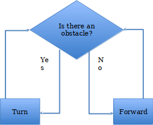
Question 1: What sensor and motion commands do you expect to use for this challenge?
You can go ahead and attempt to write the program now – or you can follow the suggested steps below.
Step 1: Write a python program containing a while loop, which will make your Initio move forward while there is no obstacle and then stop when an obstacle appears. Test your program works.
Step 2: Extend your program so that you have a Python program that will move forward while there is no obstacle, then will turn while there is an obstacle, and then stops. Test your program works.
Step 3: Now you want to extend the program so instead of going around one while loop (while there is no obstacle) and then a second (while there is an obstacle) and then stopping, it instead repeats going around the two while loops. You can do this with a third while loop that contains the other two and which starts with while True:
Question 2: Write out how you are going to test that your program works.
Question 3: Execute your program. Does it work? YES/NO
Extending the Program: While you have successfully implemented obstacle avoidance behaviour, the behaviour of your program isn’t as nice as you might like. For instance, you have to use Ctrl-C to stop the program running and then stop the Initio at the Python command line.
Exercise 1: Extend the program so you can stop and start it easily by waving your hand really close to the ultrasonic sensor (e.g. closer than 5cm). You might want to look at WS9 for hints about this. You will want it to start when something is closer than 5cm followed by being further away than 5cm (the hand appears and then moves away) otherwise it may start and then immediately stop because the hand is still there.
Exercise 2: Write a program that will follow a line. You should use the same techniques you used to design and develop your obstacle avoidance program. You can test it using the line following mat supplied as a resource with these worksheets. Your program design should involve the robot moving forward when its line sensors are either side of the line and turning left or right as appropriate if one of the line sensors detects the line. You will have to move the robot to a suitable starting position.


University of Liverpool, 2019
This work is licensed under a Creative Commons Attribution-NonCommercial-ShareAlike 4.0 International License.